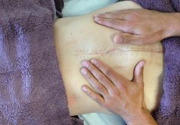
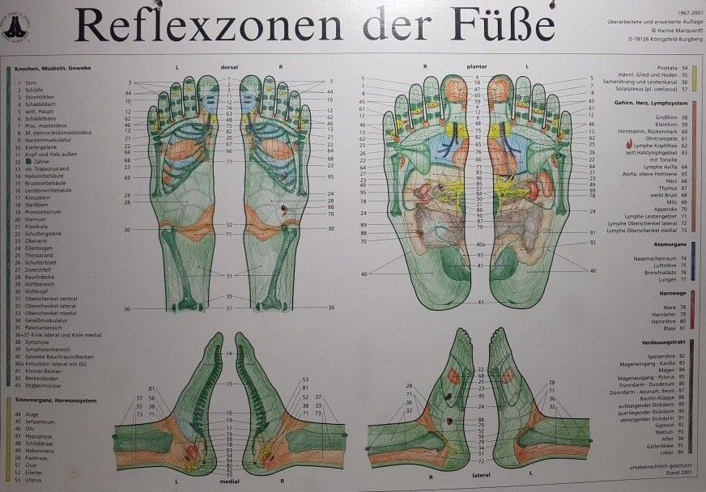

Klassische Massage
Die Klassische Massage normalisiert die Spannung der Muskeln und fördert die Durchblutung. Sie löst aber nicht nur verspannte Muskeln, sondern auch psychische Anspannung. Sie regt den Stoffwechsel an, stärkt die körpereigenen Abwehrkräfte, senkt den Blutdruck, mindert Stress und wirkt sich positiv auf das allgemeine Wohlbefinden aus.
Manuelle Lymphdrainage
Die manuelle Lymphdrainage ist eine spezielle und sanfte Form von Massage. Entlang der Lymphwege wird mit speziellen Griffen ein Druckanstieg, ein Druckabfall und eine drucklose Phase erzeugt. Damit wird der Lymphabfluss aktiviert und das Gewebe entstaut. Dadurch kann sich das Gewebe entspannen. Die Lymphe wird abdrainiert und frisches, sauerstoffreiches Blutplasma und andere Substanzen können das Gewebe wieder ernähren und regenerieren. Die Lymphdrainage eignet sich vor allem für Beschwerden, bei denen es zu Stauungen (Ödemen) von Lymphe oder Wasser im Gewebe kommt, wie zum Beispiel bei Lymphödemen, Ödemen bei rheumatischen Erkrankungen oder bei Schwellungen nach Verletzungen. Bei der Behandlung eines Lymphödems oder einer chronisch-venösen Insuffizienz (ab Stadium II) ist es während der Entstauungsphase zudem notwendig, an der betroffenen Extremität eine Kompressionsbandage anzulegen, bevor ein Kompressionsstrumpf für die Erhaltungsphase angepasst werden kann. Die manuelle Lymphdrainage beschleunigt also die Heilung nach einem Unfall oder einer Operation. Vor einer Operation angewendet verringert sie das Risiko von Komplikationen. Sie bewirkt eine schnellere und bessere Wundheilung mit einer guten Narbenbildung und wirkt schmerzlindernd. Ausserdem wird die Lymphdrainage bei folgenden Erkrankungen regelmässig angewandt: - Atemwegserkrankungen mit starker Verschleimung - Schmerzzuständen wie Nervenschmerzen oder Migräne - Neurologische Erkrankungen, bspw. nach einem Schlaganfall, bei Multiple Sklerose oder bei Lähmungen der Gesichtsnerven - Bei Arthrose und Wirbelsäulenproblemen
Fussreflexzonen
Die Therapie widerspiegelt ein komplettes Körperbild. Alle Körperteile sind der Lehre nach miteinander verbunden. Der menschliche Körper spiegelt sich im Fuss. Der Fuss ist also eine kleine Landkarte, die den Körper und seine Beschwerden repräsentiert. Dadurch können durch gezielte Druckmassagen an speziellen Stellen am Fuss körperliche und seelische Beschwerden im restlichen Körper gelöst werden. Die Fussreflexzonenmassage reguliert die Organfunktionen und kann organische Störungen positiv beeinflussen.